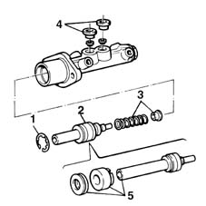

3330C18 master cylinder (pump) removed - overhaul
- Path
- Procedures > 33 BRAKING SYSTEM > 3330 HYDRAULIC BRAKING SYSTEM > 3330C brake pump, reservoir and load proportioning valve > 3330C18 master cylinder (pump) removed - overhaul
- Kind
- repair procedure (removal / refitting; the operation number is the code)
- Applies to
- all engines; all production periods
- Interactive page
- https://sloeber94.github.io/elrnDB-fMltpl/en/#/2891619
Applies to: all engines; all production periods
 Removing
Removing
 Refitting
Refitting1. Remove the circlip.
2. Remove the pump assembly from the master cylinder.
3. Remove the return spring and rubber bush.
4. Remove the seals for the brake fluid reservoir pipes.
5. Dismantle the pump assembly into its individual components.

Applies to: all engines; all production periods
Refitting
RemovingCheck the condition of the pump assembly components and master cylinder casing.
Wash the components and dry them thoroughly.
Lubricate the components with new brake fluid.
Reassemble the pump assembly.
Position the seals for the brake fluid reservoir pipes.
Position the return spring and rubber bush.
Position the pump assembly in the master cylinder.
Fix the assembly with a new circlip.